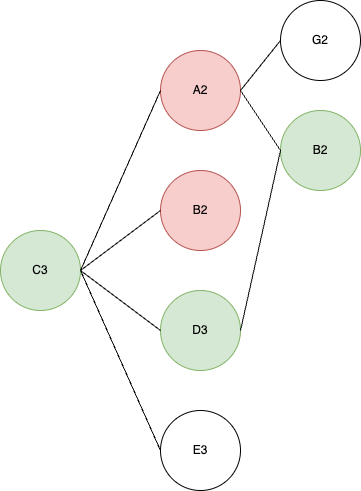

val NOTES: List[String] = List(
"E",
"F",
"F#/Gb",
"G",
"G#/Ab",
"A",
"A#/Bb",
"B",
"C",
"C#/Db",
"D",
"D#/Eb"
)
val AVAILABLE_CANTUS_FIRMUS_NOTES: List[String] =
GET_ALL_NOTES_BETWEEN_TWO_NOTES("E2", "E4")
[E2, F2, F#/Gb2, G2, G#/Ab2, A2, A#/Bb2, B2,
C3, C#/Db#3, E3, F3, F#/Gb3, G3, G#/Ab3, A3, A#/Bb3, B3
C4, C#/Db4, E4]
Look Behind

@tailrec
private def generateCantusFirmusRecursive(
length: Int,
tonic: String,
inMajorKeyNotes:
List[String],
cantusFirmus: List[String] = List(),
invalidLines: List[List[String]] = List(),
invalidNotePos: Int = -1
): List[String] = {
if (cantusFirmus.length == length) {
cantusFirmus
} else {
generateCantusFirmusNote(length, tonic, inMajorKeyNotes, cantusFirmus, invalidLines) match {
case Success(nextNote) =>
generateCantusFirmusRecursive(
length,
tonic,
inMajorKeyNotes,
cantusFirmus :+ nextNote,
invalidLines,
invalidNotePos
)
case Failure(invalidNoteException) =>
val invalidNoteMessage = invalidNoteException.getMessage
if (invalidNoteMessage == "Can not generate cantus firmus.") {
cantusFirmus
} else {
generateCantusFirmusRecursive(
length,
tonic,
inMajorKeyNotes,
cantusFirmus.dropRight(1),
invalidLines :+ invalidNoteMessage.filter(c => !"List()".contains(c)).replace(" ", "").split(",").toList,
invalidNoteMessage.last.toInt
)
}
}
}
}
private def generateCantusFirmusNote(
length: Int,
tonic: String,
inMajorKeyNotes: List[String],
cantusFirmus: List[String],
invalidLines: List[List[String]]
): Try[String] = {
if (counterpointService.isFirstNote(cantusFirmus)) {
if (invalidLines.exists(line => line.length == 1)) {
Failure(new Exception("Can not generate cantus firmus."))
} else {
Success(tonic)
}
} else {
val universalRulesApplied = applyUniversalRules(inMajorKeyNotes, cantusFirmus, invalidLines, length)
val leapsRulesApplied = counterpointService.applyLeapsRules(inMajorKeyNotes, AVAILABLE_CANTUS_FIRMUS_NOTES, cantusFirmus, universalRulesApplied)
val individualRulesApplied = applyIndividualRules(inMajorKeyNotes, length, cantusFirmus, tonic, leapsRulesApplied)
val preferenceRulesApplied = applyPreferenceRules(individualRulesApplied, cantusFirmus)
val availableNotes = preferenceRulesApplied
if (availableNotes.isEmpty) {
Failure(new Exception(s"$cantusFirmus"))
} else {
Success(availableNotes(randomService.nextInt(availableNotes.length)))
}
}
}
private def isConsonance(firstNote: String, secondNote: String, availableNotes: List[String], consonances: Set[Int]) = {
val firstNoteIdx = availableNotes.indexOf(firstNote)
val secondNoteIdx = availableNotes.indexOf(secondNote)
firstNoteIdx != -1 && secondNoteIdx != -1 &&
consonances
.contains(math.abs(availableNotes.indexOf(firstNote) - availableNotes.indexOf(secondNote)))
}
def isMelodicConsonance(lastNote: String, note: String, availableNotes: List[String]): Boolean = {
isConsonance(lastNote, note, availableNotes, MELODIC_CONSONANCES)
}
private def applyUniversalRules(notes: Seq[String], cantusFirmus: List[String], invalidLines: List[List[String]], length: Int) = {
notes
.filter(note => {
val noteIdx = AVAILABLE_CANTUS_FIRMUS_NOTES.indexOf(note)
counterpointService.applyNoRepeatedNotesRule(cantusFirmus, note) &&
counterpointService.applyMaxRangeRule(lowestNote, highestNote, noteIdx) &&
!invalidLines.contains(cantusFirmus :+ note) &&
counterpointService.applySingleClimaxRule(note, cantusFirmus, AVAILABLE_CANTUS_FIRMUS_NOTES) &&
counterpointService.isMelodicConsonance(cantusFirmus.last, note, AVAILABLE_CANTUS_FIRMUS_NOTES) &&
counterpointService.applyMaxRepetitionRules(cantusFirmus, countsOfNotes, note, length)
})
}
"should ensure that no note is followed by the same note" in {
(1 to TRIES).map(_ => {
val maxTonic = AVAILABLE_CANTUS_FIRMUS_NOTES.length - 7
val tonic = Random.between(3, maxTonic)
setUp(tonic, maxTonic)
cantusFirmusService.generate() match {
case Success(cantusFirmus) =>
cantusFirmus.zipWithIndex.map {
case (note, i) =>
if (i > 0) {
if (note == cantusFirmus(i - 1)) {
println("FAILURE FOUND WITH THIS CANTUS FIRMUS:")
println(cantusFirmus.toString())
}
note must not equal cantusFirmus(i - 1)
}
}
case Failure(e) =>
e.printStackTrace()
fail()
}
})
}